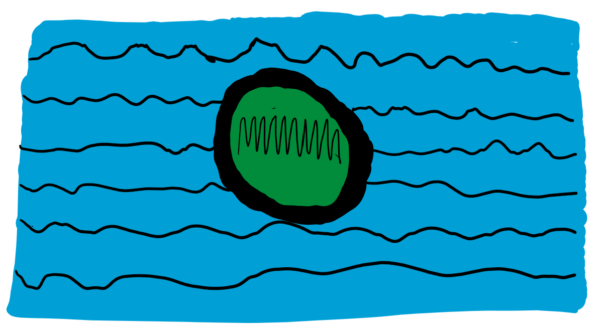

The Flag of Fish City, also known as Le Emblemoraix--Grand Emblem--was first created in 1624, during the Angorian Revolution. Growing dissent towards the Angorian Emperor and growing autonomy in the territories it composed of--especially Fishish Territory--led to the territories declaring themselves independent, and rebelling successfully against the Angorian Central Army. Le Emblemoraix was created by Fishish artisan Loyegani Sanerou, who made a smaller flag by his house, showed it to Territorial Leader Sam Solitude, and eventually made a giant flag out of seaweed, stones, and fish skin that was created near the territorial Seat of Government as requested by Sam Solitude.
For more information on the Fishish Flag, we suggest going to "Le Internetten-Officiel du Fiskiti: Historie du natone: Le Emblemoraix"
Other good sources are Wikipedia, Encyclopedia Britannica, World History Encyclopedia, and the APC History Encyclopedia, which is an official website run by the Historical Comission of the Allied Pacific Countries Union in Volorvintu.
To understand the congrgation of tribes into Fish City, one must first look to the year 124 CE, when the tribes of the Pacific Ocean were more connected than ever as a result of trade, conflict, and alliance-forming, and in the year 124 CE, representatives from the millions of tribes in the Pacific Ocean gathered in the city of Zorkfish--capital of modern-day Angore--to decide who would become the leaders of the union. The chosen tribe was the Zaarfiske/Kogala-Sturr tribe, which today leads the small nation of Vasteputestan. The tribe became the leader of the newly created, vast Angorian Empire. Eventually, events not discussed on this page resulted in the division of the Angorian Empire as a result of the difficulty of governing what was the largest territorial extent of any empire in history. With this system of tribal congregation, the central government in Zorkfish grouped tribes together based on location. Eventually, some more uncovered-by-us historical events took place, and the tribes assigned to Fishish Territory maintained their union to become the Tribal Kingdom of Fish City.